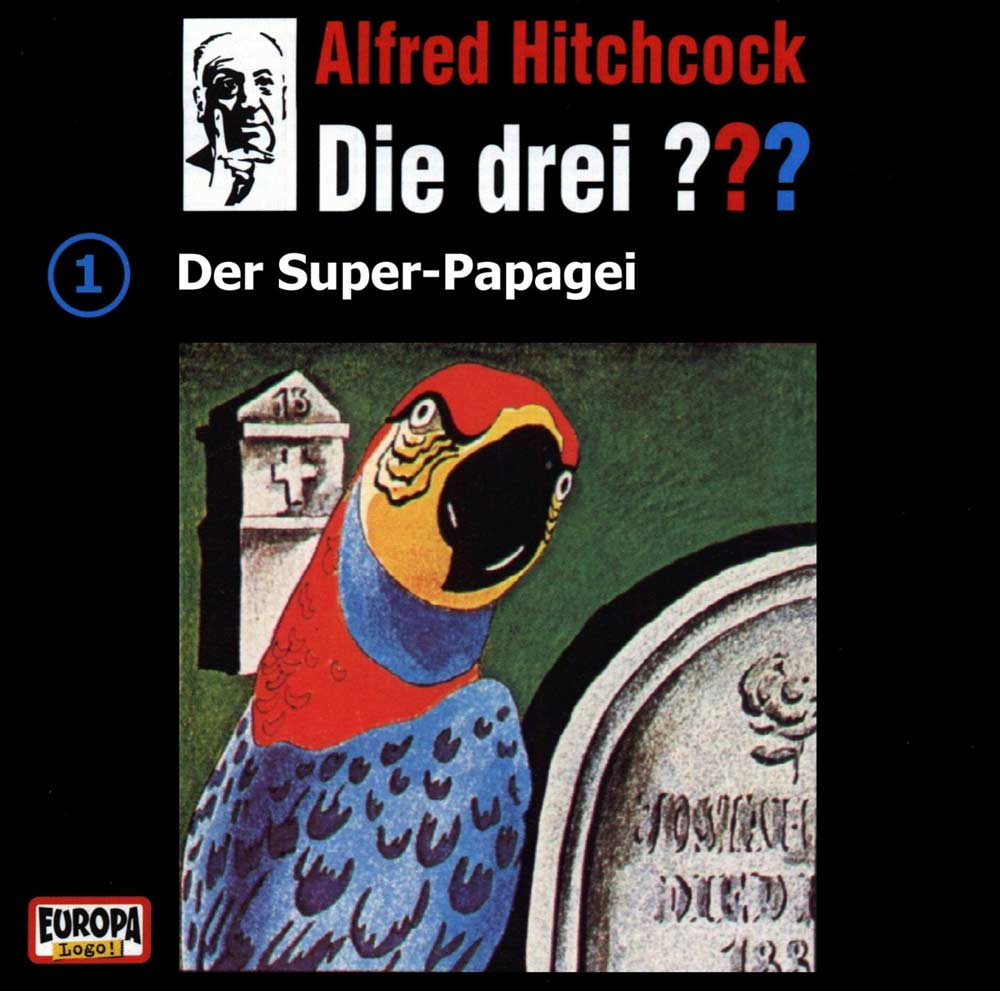

Die drei ???
001 – Der Super-Papagei

1. Ein Hilferuf
2. Ein Papagei spricht Latein
3. Schneewittchen ist verschwunden
4. Ein unverhoffter Besuch
5. Blackbeard der Pirat
6. Die rätselhafte Botschaft
7. Von Steinen und Gebeinen
8. Blackbeard hat das letzte Wort